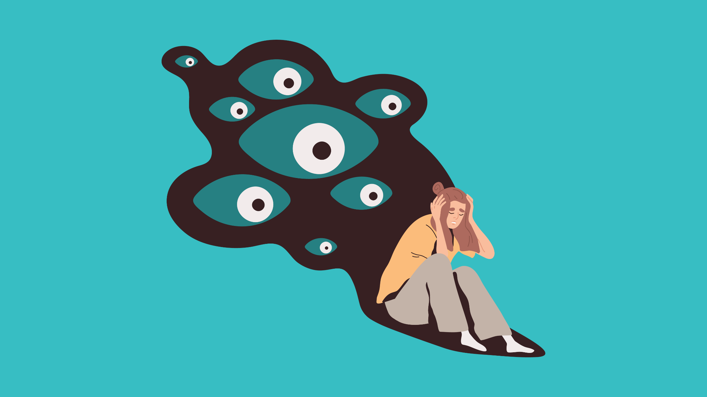

Anxiety Disorders

Generalized Anxiety Disorder
Generalized Anxiety Disorder (GAD) is an anxiety disorder characerized by excessive worry, stress, or apprhension that interefers with daily life and is recurring and persistent. Symptoms include:
- overthinking
- worrying about everyday things
- difficulty controlling feelings of worry or nervousness
- anticipating danger, catastrophe, or misfortune
- anxiety about a number of areas out of proportion to their real threat
- percieving events or situations as threatening when they are not
- having trouble relaxing
- having trouble staying or falling asleep
- restlessness
- fatigue
- being wound-up or on-edge
- being easily startled or jumpy
- being twitchy
- trembling
- quickened breathing
- feeling out of breath or otherwise lightheaded
- quickened heartbeat
- sweating
- muscle tension
- unexplained aches or pains
- excessive amount of trips to the bathroom
- nausea or stomach issues
- difficulty swallowing
- difficulty concentrating
- difficulty handling uncertainty
- indecisiveness, fear of being wrong or making the wrong decisions
- feeling your mind "go blank"
- irritability
Social Anxiety Disorder
Social Anxiety Disorder (SAD) is an anxiety disorder characterized by feeling fear or anxiety involving any kind of social interaction. It often interferes with the ability to form, feel comfortable in, or keep stable relationships. It has the same symptoms as General Anxiety Disorder, but includes others, such as:
- fear in situations regarding judgement from others
- worry about embarassment or humiliation
- fear of interacting or speaking with strangers
- fear others will notice your anxiety
- avoiding interaction with others
- avoiding situations in which attention would be on you
- anxiety in anticipation of social events or activities
- analyzing your performance in social interactions and identifying your mistakes
- expectng the worst after social interactions
- blushing
- having a shaky voice
Specific Phobias
A Specific Phobia is an anxiety disorder in which someone feels intense, illogical fear of something particular that poses little real danger. These fears often do not go away without treatment. Symptoms are similar to General Anxiety Disorder, but come up when thinking about or interacting with their specific fear. Additional symptoms include:
- having irrational or excessive worry about encountering their fear
- avoiding what they fear
- experience intense anxiety or panic when exposed to or when thinking about their fear
- having anxiety that increases as your fear gets closer in time or location
- knowing your fear is illogical but being unable to control it
Panic Disorder
Panic Disorder is an anxiety disorder where people repeatedly experience unexpected panic attacks. They are episodes of overwhelming physical and psychological distress -- oftentimes, people having a panic attack will believe they are having a heart attack or otherwise dying. Syptoms of a panic attack include:
- chest pain, heart palpitations, a punding or rapid heartbeat
- feeling short of breath, light-headed, faint, or smothered
- tightness of the throat and a fear of choking
- belief they're dying or losing control
- anticipation of danger
- dizziness
- abdomminal distress or nausea
- numbness or tingling
- trembling or shaking
- sweating and hot flashes or chills
- feeling detached or unreal